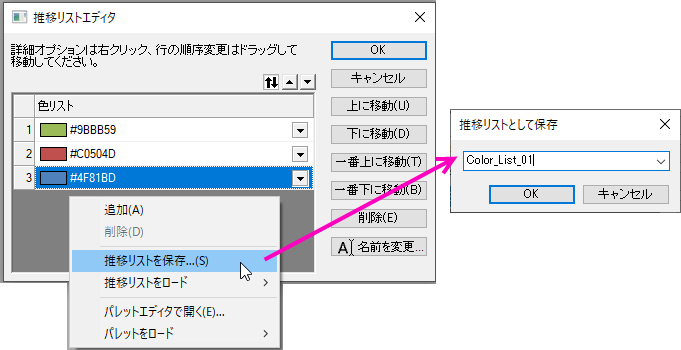

塗りつぶし付きエラーバー
ErrorBar-FillArea
概要
このグラフは3つのエラーバー付きグラフを表示しています。エラーバーは塗りつぶしエリアのある線として描くことができます。全ての曲線に対して透過率が設定されているので、重なる範囲もはっきりと見る事ができます。

必要なOriginのバージョン: Origin 8.5.1 SR0以降
学習する項目
- エラーバーを塗りつぶし範囲として作図する
- エラーバーの透過率を設定する
- カスタム色の設定と保存を行う
ステップ
このチュートリアルは、チュートリアルデータプロジェクト（<Origin EXE Folder>\Samples\Tutorial Data.opj）と関連しています。
また、ラーニングセンターからこのグラフを呼び出すことができます。(ヘルプ: ラーニングセンター メニューを選択、または キーボードのF11 キーを押して、グラフサンプルLine and Symbolを選択します)
- Tutorial Data.opjを開き、プロジェクト・エクスプローラ (PE)でError Bars with Fill Areaフォルダを開きます。
- ワークシートのすべての列を選択します。メニューから作図：基本の2Dグラフ：折れ線を選択します。
- 3つのプロットのうちの1つのエラーバーをクリックして、ミニツールバーの色付き面積ボタンをクリックします。
- 1つのプロット上でクリックして、ミニツールバーの線の色ボタンをクリックします。ポイント毎タブで、CTRLキーを押しながらカラーリストをクリックして、推移リストエディタを開きます。
- 推移リストエディタダイアログでは、カラーリストを編集可能です。リストの一番上の色をクリックして、カスタムの下の空の四角をクリックして、カラーダイアログを開きます。16進の色コード9BBB59 を入力して、下図のようにカスタムカラーを作成します。
- 2番目、3番目も同じように、Hex(#C0504D)、Hex(#4F81BD) の色を設定します。リスト内の他の色は削除して、この色推移リストを保存します。 そして、この新しいカラーリストがプロットの推移リストとして設定されます。
- 
- プロットを再度クリックして、線の太さを3に変更します。
- プロット上でダブルクリックして、作図の詳細ダイアログを開き、透過率を50%に設定します。
- エラーバーの塗り色をそれぞれ、Hex(#9BBB59)、Hex(#C0504D)、Hex(#4F81BD)に設定します。
- アンチエイリアシングの有効/無効ボタン
 をおして、グラフを滑らかに表示します。
をおして、グラフを滑らかに表示します。